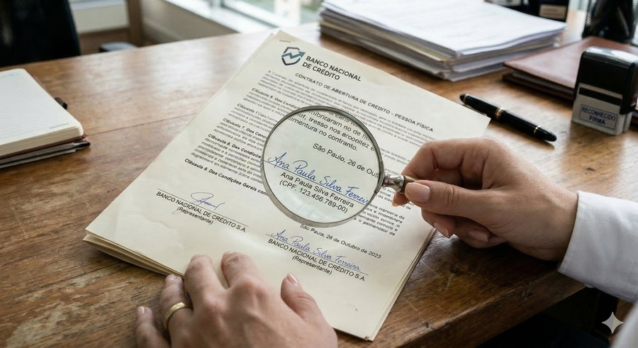

Poucas coisas são tão pessoais quanto a forma de escrever. A Grafoscopia é a ciência forense que estuda essa marca individual — a escrita manual e a assinatura — para determinar, com método e evidência, se um grafismo é autêntico, falso ou de determinada autoria. É o exame que transforma um traço de tinta em prova técnica.
Escrever é um gesto aprendido que, com o tempo, se torna automático. Deixamos de pensar em cada letra e passamos a registrar no papel um conjunto de movimentos involuntários: a pressão da caneta, a velocidade, o ritmo, a inclinação, a maneira como iniciamos e encerramos cada traço. Esses hábitos motores se fixam de forma tão profunda que resistem até às tentativas de disfarce. É por isso que, mesmo quem tenta imitar uma assinatura, raramente consegue reproduzir aquilo que não enxerga: o gesto por trás do desenho.
A escrita revela um movimento.
Toda análise grafoscópica nasce de uma pergunta clara. O exame grafotécnico foi feito para responder, com método e evidência, a três delas:
A assinatura ou o manuscrito foi realmente produzido por quem se afirma ser o autor? É a pergunta mais frequente.
Dentre os possíveis autores, quem produziu determinado grafismo? É o exame indicado para documentos anônimos e escritos atribuídos a terceiros.
Um conjunto de lançamentos foi feito por uma única pessoa, ou há mais de uma mão envolvida no mesmo documento?
Praticamente qualquer documento que contenha escrita ou assinatura questionada pode ser objeto de exame. Alguns dos mais frequentes:
A análise pericial vai muito além da simples semelhança visual ou do "desenho" das letras. O exame avalia elementos individualizadores, hábitos motores e inconscientes, que tornam a escrita de cada pessoa tão única quanto uma impressão digital.
A metodologia científica é o conjunto de regras, técnicas e procedimentos estruturados que garantem uma investigação padronizada, imparcial, rastreável e passível de verificação. Independentemente da área de atuação pericial, é imprescindível empregar uma metodologia devidamente certificada e com amplo reconhecimento nacional e internacional. A ciência pericial exige precisão, e o profissional comprometido com a verdade material precisa estar sempre em dia com as inovações da sua área.
Envie o material para uma análise inicial de viabilidade e solicite o seu orçamento, sem compromisso.